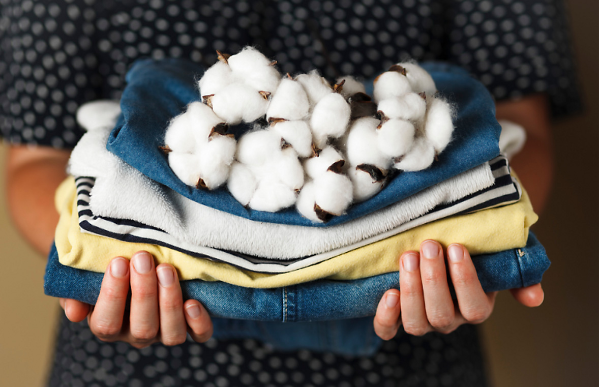
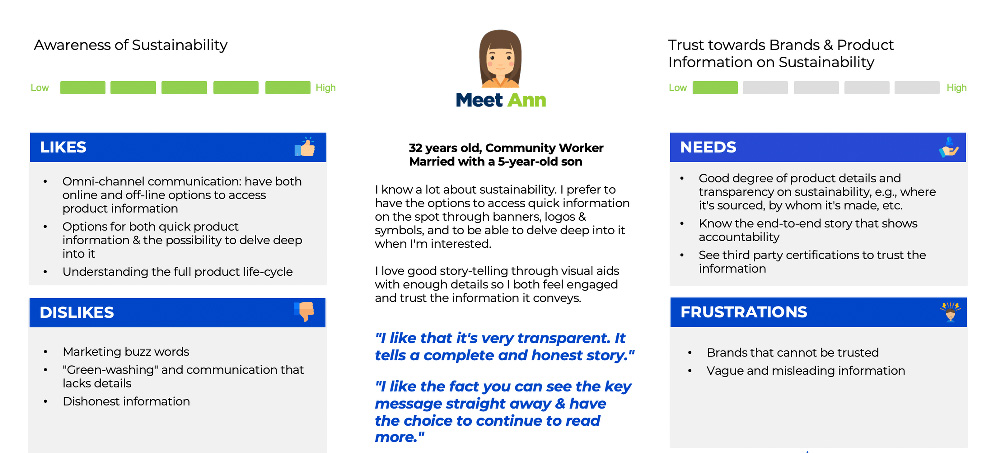
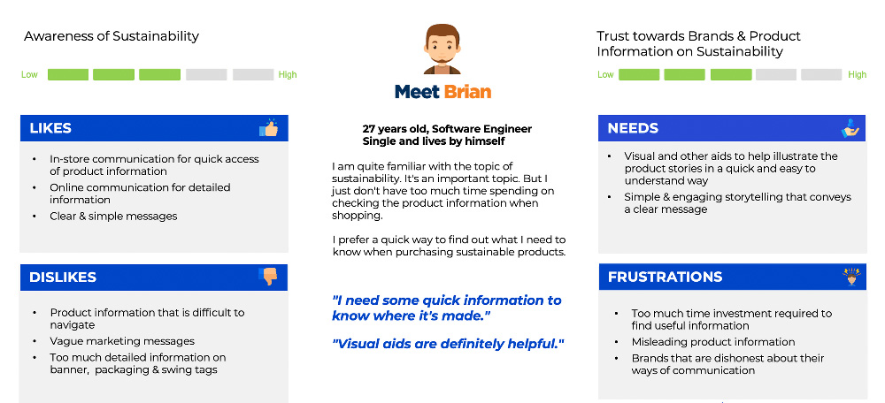
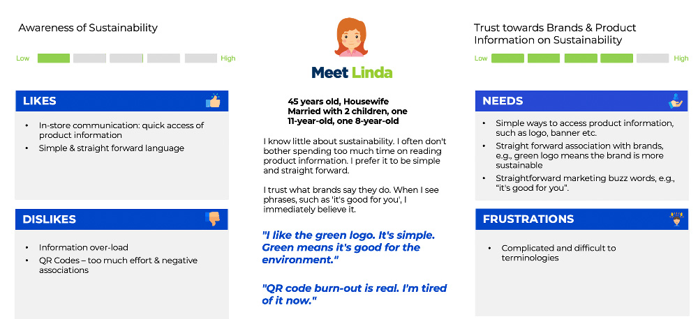
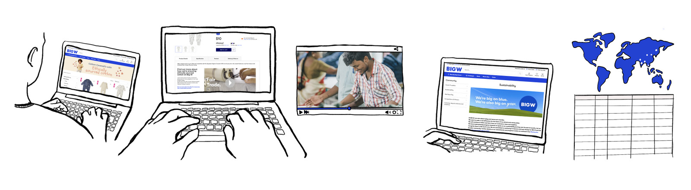
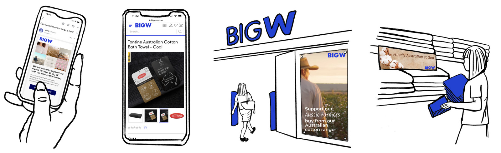
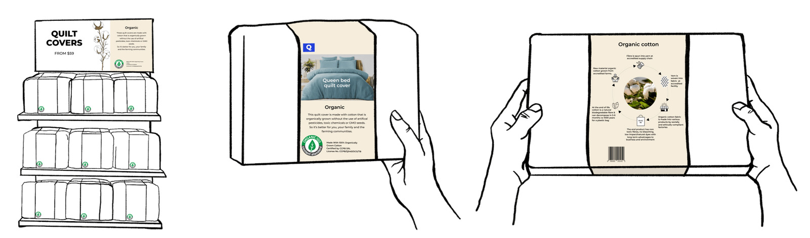
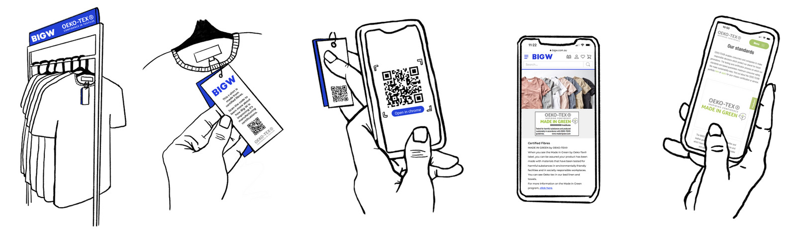

Big W Sustainability Project
A product solution that helps Big W share product sustainability and traceability information with customers

Services
Product Strategy, User Research
Industry
Consumer Goods & Services
Role
Product Designer
Duration
Jan 2022 – Mar 2022
Challenge
Sustainability and traceability are growing priorities in the apparel and home goods sector. While Big W has made strides, research showed gaps in how product information is communicated to customers.
Discovery
Survey
We surveyed customers on their understanding of terms like “sustainable” and “ethically made,” and how they currently access product info. Insights revealed a desire for clarity and consistency.


Interviews
In-depth interviews further explored consumer expectations and how they make sense of labels, tags, and online messaging.


Affinity Mapping
We synthesised insights to define user needs, preferences, and pain points in traceability awareness.

Personas
Three key personas emerged from our research to guide ideation and prototyping.
  Development
Storyboards & Focus Groups
We presented 4 concepts via storyboards, exploring online, offline, and omnichannel strategies. Focus groups helped validate value propositions and visual design cues.
   Outcome
The project opened up new opportunities to align digital and in-store experiences for transparency and brand trust. It led to recommendations for clearer packaging, interactive traceability, and strategic messaging.

Reflection
This project deepened my understanding of the role design can play in driving sustainability within large retail environments. Working with stakeholders across product, sustainability, and operations teams reminded me that aligning diverse perspectives is essential for meaningful change.
By grounding our work in customer journeys and staff realities, we were able to surface practical opportunities for sustainable impact—without adding friction to the shopping or business experience. It reinforced the value of systems thinking and empathetic facilitation when tackling complex, cross-functional challenges.